Descargar estos apunte en pdf o html
El proceso de depuración es una parte esencial del desarrollo de software. Consiste en identificar y corregir errores o "bugs" en el código, asegurando que el programa funcione como se espera.
Este proceso se puede realizar de varias formas, como:
Existen más formas pero quedarán fuera del alcance del módulo y se tratarán en Entronos de Desarrollo.
Además, la depuración no solo se trata de encontrar errores, sino también de comprender el flujo del programa y cómo interactúan las diferentes partes del código y examinar el contenido de las variables. Esto es especialmente importante en lenguajes como C#, donde la sintaxis y las estructuras de control pueden ser complejas.
En este tema, exploraremos cómo depurar y testar un proyecto en C# utilizando Visual Studio Code (VS Code).
Para ver las diferentes formas de depurar y testear un proyecto en C#, vamos a utilizar un proyecto de ejemplo que ya hemos visto en el tema anterior. Este proyecto es una aplicación de consola que calcula el área de un triángulo a partir de su base y altura.
Enunciado:
Algoritmo que toma como dato de entrada la base y la altura de un triángulo en centímetros y calcula el área del mismo. El resultado se mostrará por pantalla. Para calcular el área de un triángulo debes aplicar la fórmula indicada.
La ejecución debe cumplir la siguiente especificación de entrada y salida:
Introduce la base del triángulo en cm: 8 Introduce la altura del triángulo en cm: 9 El área del triángulo es: 36 cm²
Supongamos que creamos una solución, como hemos visto en la Unidad 2, denominada proyecto con una aplicación de consola como proyecto denominado aplicacion. La estructura de nuestro proyecto sería la siguiente:
Para crearlo, puedes utilizar VS Code como se explica en la Unidad 2 o utilizar la terminal de Windows con los siguientes comandos:
> mkdir proyecto > cd proyecto proyecto> dotnet new sln -n proyecto proyecto> dotnet new console -n aplicacion proyecto> dotnet sln add aplicacion/aplicacion.csproj
La implementación correcta en Program.cs de nuestro proyecto de aplicación sería la siguiente:
public class Program
{
public static void Main()
{
Console.Write("Introduce la base del triángulo en cm: ");
double baseTriangulo_cm = double.Parse(Console.ReadLine()!);
Console.Write("Introduce la altura del triángulo en cm: ");
double alturaTriangulo_cm = double.Parse(Console.ReadLine()!);
double areaTriangulo_cm = baseTriangulo_cm * alturaTriangulo_cm / 2;
string salida = $"El área del triángulo es: {areaTriangulo_cm} cm²";
Console.WriteLine(salida);
}
}
Hasta hora cuando compilamos un programa, este se ejecuta en modo debug. En este modo el compilador genera información adicional para ayudar a depurar el código. Por ejemplo, los nombres de las variables y los números de línea. Esto hace que el programa sea más lento, tenga más tamaño y consuma más memoria. Esta versión es la que se genera por defecto al compilar y como se ve en el árbol de directorios de un proyecto de C#, genera una carpeta bin/Debug/netX.0 donde X.0 es la versión de .NET que estés usando.
Sin embargo, al cliente le entregamos una versión release. En este modo el compilador optimiza el código para que sea más rápido y consuma menos recursos. Por lo que no genera información adicional para depurar el código. Esta versión es la que se genera al compilar en modo release y como se ve en el árbol de directorios de un proyecto de C#, genera una carpeta bin/Release/netX.0 donde X.0 es la versión de .NET que estés usando.
Para generar esta versión, deberemos hacerlo a través del CLI de dos formas posibles:
dotnet build -c Release: Nos compilará para Release y el resultado estará en la carpeta bin/Release/netX.0.dotnet publish -c Release -o ./deploy: Nos compilará para Release y el resultado estará en la carpeta deploy en la raíz de nuestro proyecto. Esta opción es la que se suele usar para subir a producción un programa.Puedes probar las a generar en nuestro proyecto de ejemplo con los siguientes comandos:
proyecto> cd .\aplicacion proyecto\aplicacion> dotnet build Restauración completada (0,5s) aplicacion realizado correctamente (0,7s) → bin\Debug\netX.0\aplicacion.dll Compilación realizado correctamente en 1,9s proyecto\aplicacion> dotnet publish -c Release -o ./deploy Restauración completada (0,5s) aplicacion realizado correctamente (3,7s) → deploy\ Compilación realizado correctamente en 4,9s
Nota
En realidad el proceso tiene más pasos y es algo más complejo, pero este ejemplo es solo para entender la idea general y ver la diferencia entre ambas versiones.
El proceso de depuración es muy similar en todos los lenguajes y entornos de desarrollo. En C#, Visual Studio Code (VS Code) proporciona herramientas integradas para depurar aplicaciones de consola, lo que facilita la identificación y corrección de errores en el código.
Veamos cuales son estas herramientas y cómo podemos utilizarlas para depurar nuestro proyecto de ejemplo...
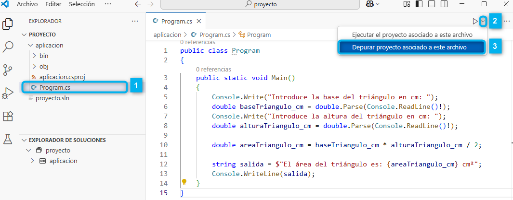
1️⃣ Deberemos seleccionar el programa principal del proyecto que queremos depurar.
2️⃣ Desplegamos en la parte superior derecha las opciones de ejecución.
3️⃣ Seleccionamos "Depurar proyecto asociado a este archivo".
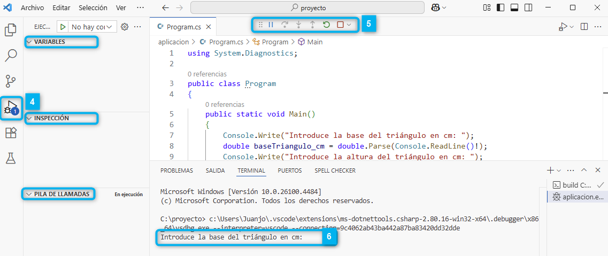
4️⃣ Nada más pulsar el botón de depuración abandonaremos la opción de explorador de archivos y nos aparecerá la pestaña de Depuración (debug) con diferentes secciones como: VARIABLES, INSPECCIÓN, PILA DE LLAMADAS, etc.
5️⃣ En la parte superior nos aparecerá una barra de herramientas con diferentes opciones como: Continuar, Detener, Paso a paso, Paso a paso por entrada, etc. Estas opciones nos permiten controlar la ejecución del programa durante la depuración.
6️⃣ Por último, puedes comprobar que la ejecución en el terminal se ha detenido a la espera de introducir la base del triángulo.
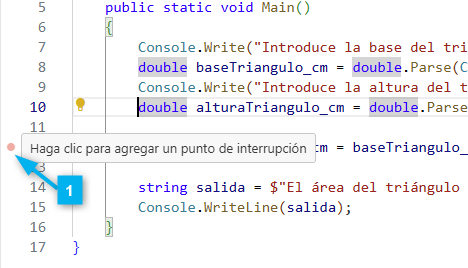
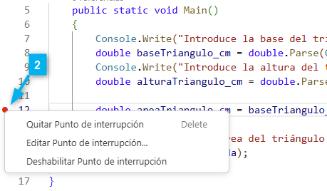
1️⃣ Nos situamos a la izquierda de la línea de código donde queremos poner el punto de ruptura (breakpoint) y nos ofrecerá hacer click izquierdo para añadirlo.
2️⃣ Una vez añadido, veremos un punto rojo que indica que se ha añadido correctamente. Si hacemos click derecho sobre él, nos ofrecerá un menú contextual con diferentes opciones.
Si volvemos a ejecutar el programa en modo depuración, la ejecución se detendrá en el punto de ruptura que hemos añadido en la línea 12. Esto nos permitirá inspeccionar el estado del programa en ese momento, ver el valor de las variables y evaluar expresiones...
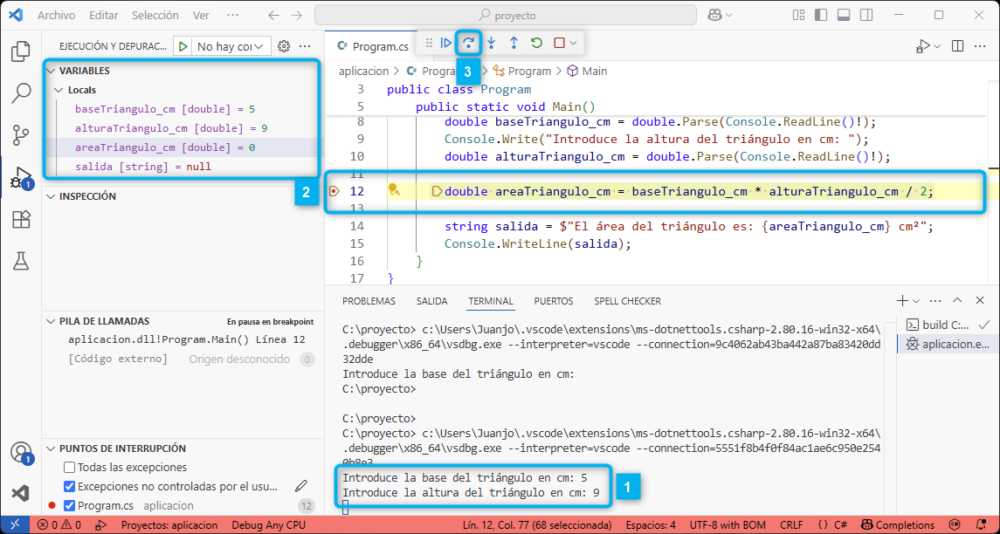
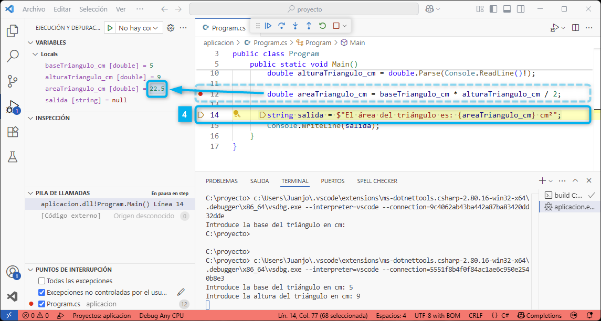
1️⃣ Al ejecutar para que llegue al punto de interrupción deberemos introducir en el terminal la base y la altura del triángulo. En este caso, hemos introducido 5 y 9.
2️⃣ Una vez que el programa se detiene en el punto de ruptura, podemos ver el valor de las variables en la sección de VARIABLES y se resaltará la línea de código donde estamos detenidos.
3️⃣ Si pulsamos el botón de Paso a paso o F10 (step over), la ejecución avanzará a la siguiente línea de código. En este caso, se ejecutará la línea que calcula el área del triángulo y se detendrá en la siguiente línea.
4️⃣ Ahora la variable areaTriangulo_cm tendrá el valor de 22.5 y se resaltará la nueva línea de código donde estamos detenidos que es donde vamos a asignar el string de salida a mostrar por pantalla.
Enlaces
Si quieres profundizar más a cerca del proceso de depuración en Visual Studio Code, puedes consultar la documentación oficial en el siguiente enlace. En él podrás encontrar otras formas de depuración más avanzadas y sobre cómo gestionar breakpoints, inspeccionar variables, evaluar expresiones, etc.
A parte de los test unitarios que verás durante el curso, las aserciones son una herramienta muy útil para el desarrollo de software.
Se usan para detectar errores de programación (bugs) durante la fase el desarrollo y la depuración. Sirven como una red de seguridad interna para el desarrollador. Con ellos verificamos suposiciones que el programador hace sobre el estado del programa en un punto concreto.
Los usos más comunes son en:
En esencia, fuera de los tests, los asserts ayudan a asegurar la corrección interna del programa y a documentar suposiciones críticas del desarrollador. Si un assert falla, indica un problema lógico en el código que debe ser arreglado, no un error esperado del usuario o del entorno. Por eso, a menudo se pueden deshabilitar en las versiones de producción para mejorar el rendimiento. Esto es, en el cliente sale un error de ejecución y nosotros con la versión de desarrollo y las aserciones activadas podemos obtener más información sobre las causas reales del error mucho antes de donde se ha producido.
Nota
Las aserciones no sirven para validar entradas de usuario o manejar errores esperados. No deben ser usadas como sustituto de la gestión de excepciones que veremos más adelante. En su lugar, son herramientas para ayudar a los desarrolladores a detectar y corregir errores lógicos en el código.
Se encuentra definida en el espacio de nombres System.Diagnostics y se usa a través de la clase Debug. Para ello deberemos importar el espacio de nombres al principio del programa:
using System.Diagnostics;
Debug.Assert nos permite "afirmar" (assert) que esa condición es verdadera. Si resulta ser falsa mientras estás ejecutando tu programa en modo de depuración (Debug), el programa se detendrá y te mostrará un mensaje, indicándote exactamente dónde falló tu suposición. Esto es increíblemente útil para pillar errores lógicos temprano durante el desarrollo.
La forma de usarlo es simple: escribes Debug.Assert(condicion, "mensaje opcional");. La condicion es cualquier expresión que evalúe a verdadero o falso. Si la condición es true, el programa sigue como si nada. Si es false, se muestra una ventana de error con tu "mensaje opcional" (que deberías usar para explicar qué condición esperabas) y la pila de llamadas, ayudándote a entender qué salió mal.
Nota
Estas comprobaciones Assert solo se ejecutan en las compilaciones de 'Debug'. Cuando compilas tu aplicación para 'Release', todas las llamadas a Debug.Assert se eliminan automáticamente, por lo que no afectan al rendimiento del programa final.
Veamos un ejemplo de uso como precondiciones en un programa que calcula el área de un triángulo. En este caso, la precondición es que la base y la altura deben ser mayores que cero.
using System.Diagnostics;
public class Program
{
public static void Main()
{
Console.Write("Introduce la base del triángulo en cm: ");
double baseTriangulo_cm = double.Parse(Console.ReadLine()!);
Console.Write("Introduce la altura del triángulo en cm: ");
double alturaTriangulo_cm = double.Parse(Console.ReadLine()!);
// Precondiciones
Debug.Assert(baseTriangulo_cm > 0, "La base debe ser mayor que cero.");
Debug.Assert(alturaTriangulo_cm > 0, "La altura debe ser mayor que cero.");
double areaTriangulo_cm = baseTriangulo_cm * alturaTriangulo_cm / 2;
string salida = $"El área del triángulo es: {areaTriangulo_cm} cm²";
Console.WriteLine(salida);
}
}
Volviendo a nuestra proyecto de ejemplo:
Si ejecuto la versión de Debug desde el CLI con dotnet run -c Debug y la altura es cero, obtendremos...
proyecto\aplicacion> dotnet run -c Debug
Introduce la base del triángulo en cm: 5
Introduce la altura del triángulo en cm: 0
Process terminated. Assertion failed.
La altura debe ser mayor que cero.
at Program.Main() in proyecto\aplicacion\Program.cs:line 13
Nos muestra un error de aserción y nos indica la línea donde se ha producido el error con el mensaje que nos indica la precondición que no se ha cumplido.
Si ejecuto la versión de Release desde el CLI con dotnet run -c Release y la altura es cero, obtendremos...
proyecto\aplicacion> dotnet run -c Release Introduce la base del triángulo en cm: 5 Introduce la altura del triángulo en cm: 0 El área del triángulo es: 0 cm²
El programa se ejecuta sin problemas y no se detiene. Esto es porque las aserciones no están activas en la versión de Release. Por lo que no se evalúan y no se muestran.
A lo largo del curso veremos más ejemplos de aserciones y su uso en el desarrollo de software. En este caso, solo hemos visto un ejemplo básico para entender su utilidad y cómo se usan en C#.
🚀 Ampliación opcional:
Este mismo sistema de depuración, lo podremos usar en otros lenguajes como Python, Kotlin, Java, JavaScript, C++, PHP, etc. En cada uno de ellos con su propia sintaxis y forma de uso.
Kotlin:
fun main() {
print("Introduce la base del triángulo: ")
val baseTriangulo = readLine()!!.toDouble()
print("Introduce la altura del triángulo: ")
val alturaTriangulo = readLine()!!.toDouble()
assert(baseTriangulo > 0) {"La base debe ser mayor que cero."}
val areaTriangulo = 0.5 * baseTriangulo * alturaTriangulo
println("Área del triángulo: %.2f".format(areaTriangulo))
}
Python:
base_triangulo = float(input("Introduce la base del triángulo: "))
altura_triangulo = float(input("Introduce la altura del triángulo: "))
assert base_triangulo > 0, "La base debe ser mayor que cero."
assert altura_triangulo > 0, "La altura debe ser mayor que cero."
area_triangulo = 0.5 * base_triangulo * altura_triangulo
print(f"Área del triángulo: {area_triangulo:.2f}")
El objetivo, no es aprender a crear proyectos de test, ni profundizar en el uso de herramientas de testing, sino que es entender cómo funcionan los tests y cómo pasarlos en C#. Para ello, vamos a ver una introducción conceptual a los Test Unitarios, el TDD, cómo está configurada una solución con un proyecto de test. Posteriormente veremos cómo pasarlos y entender si pasan correctamente y si fallan saber qué esta fallando.
Un test unitario es un procedimiento automatizado que valida el correcto funcionamiento de una "unidad" de código aislada. Una unidad es el componente de software más pequeño que se puede probar, como una función, un método de una clase o, en ocasiones, una clase completa. El objetivo es verificar que, para un conjunto de entradas específicas, la unidad produce el resultado esperado. Muchos de estos conceptos como módulo, función, clase, etc. los iremos viendo a lo largo del curso.
La integración de tests unitarios en el ciclo de vida del desarrollo de software es fundamental por las siguientes razones:
Detección Temprana de Errores: Identifican fallos en la lógica de componentes individuales en la fase de desarrollo, cuando el coste de su corrección es significativamente menor.
Documentación Técnica: Los tests unitarios actúan como una forma de documentación ejecutable. Ilustran el comportamiento esperado de una unidad de código y sirven como ejemplos de su uso, mostrando las entradas que acepta y las salidas que produce.
Mejora del Diseño del Código: Escribir código "testable" (que se pueda probar) fomenta un diseño de bajo acoplamiento y alta cohesión. Obliga a los desarrolladores a pensar en las dependencias y en la modularidad de sus componentes, resultando en una arquitectura más limpia y mantenible.
Cumplimiento de Especificaciones: Los tests unitarios ayudan a garantizar que el código cumple con las especificaciones y requisitos definidos. Esto es especialmente importante en entornos regulados o críticos, donde la precisión y la fiabilidad son esenciales.
El Desarrollo Guiado por Pruebas (Test-Driven Development - TDD) es una metodología de desarrollo de software que invierte el ciclo de desarrollo tradicional. En lugar de escribir el código primero y los tests después (si es que se escriben), el TDD sigue un ciclo corto y repetitivo.
El ciclo en TDD se conoce como "Rojo-Verde-Refactorizar":
Rojo (Red): Se escribe un test para una funcionalidad específica que aún no ha sido implementada. Al ejecutar el test, este debe fallar, ya que el código de producción correspondiente no existe. Nosotros os proporcionaremos el test que debéis pasar del ejercicio que fallará al principio.
Verde (Green): Se escribe el código necesario según las especificaciones y la salida esperada en el test para que ahora pase. El objetivo en este paso no es la optimización ni la elegancia, sino únicamente satisfacer el requisito del test.
Refactorizar (Refactor): Una vez que el test está en verde, el código se puede mejorar, limpiar y optimizar. Volveremos a pasar el test para asegurarnos de que los cambios no rompen la funcionalidad existente. Este paso es crucial para mantener un código limpio y mantenible a lo largo del tiempo.
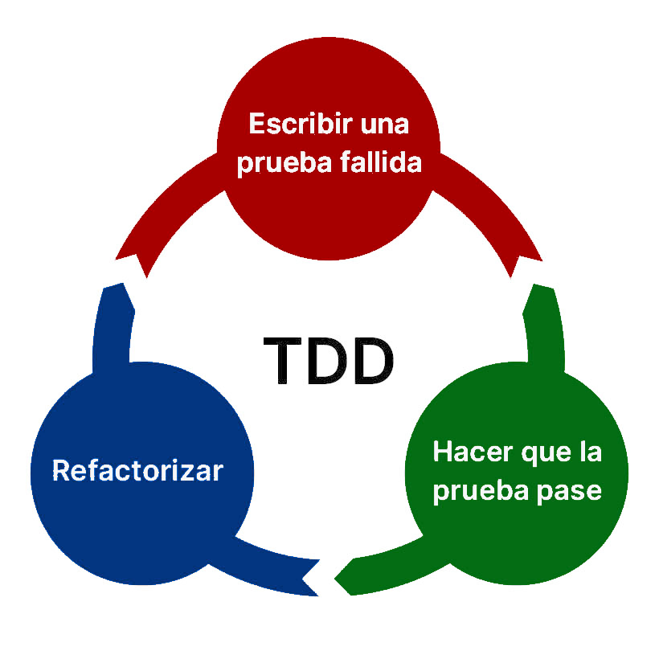
Este proceso se repite para cada nueva funcionalidad o especificación añadida. El resultado es un código completamente cubierto por tests desde su concepción, lo que conduce a sistemas más robustos y a una reducción significativa del tiempo dedicado a la depuración.
Nota
Nosotros vamos a seguir una metodología parecida para realizar los ejercicios de programación. Aunque no vamos a seguir estrictamente el TDD, sí que vamos a daros los tests antes de implementar la funcionalidad requerida. Esto nos ayudará a entender mejor cómo funcionan los tests y a asegurarnos de que nuestro código cumple exactamente las especificaciones desde el principio.
En C#, los tests unitarios se implementan comúnmente utilizando frameworks como NUnit, xUnit o MSTest. Estos frameworks proporcionan herramientas y convenciones para escribir, organizar y ejecutar tests de manera eficiente. Nosotros vamos a utilizar xUnit en este curso, que es uno de los frameworks más populares y ampliamente utilizados en la comunidad de desarrollo de C#.
Aunque no vas a tener que crearlos, vamos a ver el proceso de creación de un proyecto de test unitario en C# para que entiendas cómo funcionan y cómo puedes ejecutarlos.
Para añadir un proyecto de test unitario a nuestra solución, podemos utilizar el siguiente comando en la terminal:
proyecto> dotnet new xunit -n aplicacion.test proyecto> dotnet sln add aplicacion.test/aplicacion.test.csproj
Ahora añadiremos una referencia al proyecto de aplicación desde el proyecto de test. Este paso lo entenderemos más adelante en el curso, pero básicamente es para que el proyecto de test pueda acceder al código de la aplicación y probarlo. Utilizaremos el siguiente comando en la terminal:
proyecto> dotnet add aplicacion.test/aplicacion.test.csproj reference aplicacion/aplicacion.csproj
Si abrimos la solución en Visual Studio Code, deberíamos tener lo siguiente:
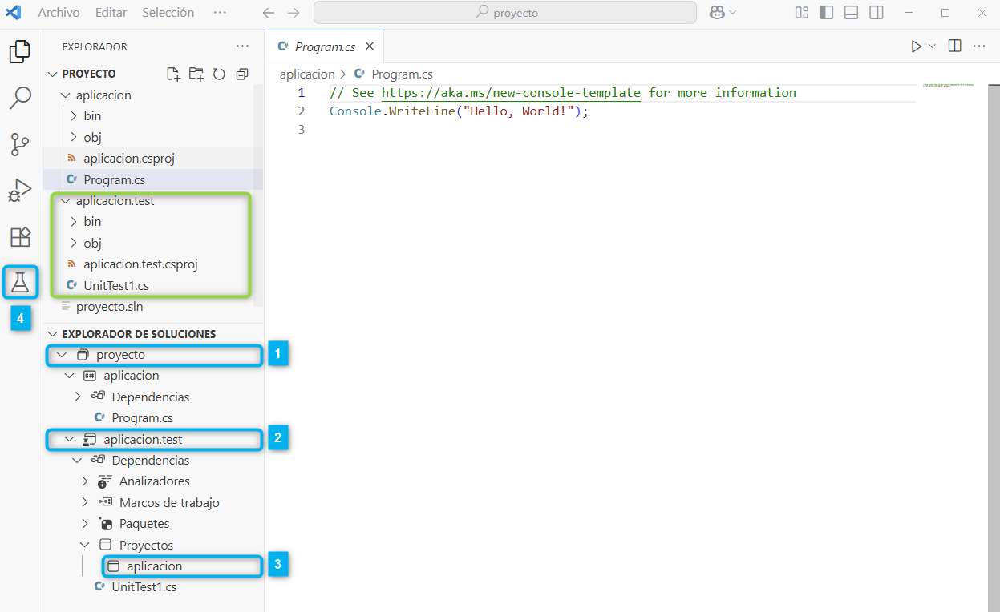
1️⃣ Tenemos la solución proyecto.sln abierta en el "EXPLORADOR DE SOLUCIONES".
2️⃣ Además del proyecto de aplicación aplicacion, nos aparece el proyecto de test aplicacion.test añadido a la solución.
3️⃣ Dentro del proyecto de test, en Dedencias > Proyectos, tenemos una referencia al proyecto de aplicación aplicacion que es el que queremos testear.
4️⃣ Al detectar el proyecto de test, Visual Studio Code nos ofrecerá ahora un nuevo icono en la barra lateral izquierda para acceder a los tests con el icono de una probeta.
Supongamos que nos piden crear test unitarios para el programa que calcula el área de un triángulo que he mos tratado a lo largo del tema. Para ello, vamos a crear un simple test que verifique que el programa imprime correctamente el área del triángulo cuando se le proporcionan entradas válidas.
A continuación, iremos a UnitTest1.cs y escribiremos el siguiente código de test que de momento carece de sentido para nosotros.
namespace aplicacion.test;
public class UnitTest1
{
[Fact]
public void Main_ImprimeAreaCorrecta_ConEntradasValidas()
{
// Simulamos la entrada del usuario (base=8, altura=9)
var input = new StringWriter();
input.WriteLine("8"); // base válida
input.WriteLine("9"); // altura válida
using var reader = new StringReader(input.ToString());
using var writer = new StringWriter();
var originalIn = Console.In;
var originalOut = Console.Out;
try
{
Console.SetIn(reader);
Console.SetOut(writer);
Program.Main();
}
finally
{
Console.SetIn(originalIn);
Console.SetOut(originalOut);
}
var output = writer.ToString();
Assert.Contains("Introduce la base del triángulo en cm:", output);
Assert.Contains("Introduce la altura del triángulo en cm:", output);
Assert.Contains("El área del triángulo es: 36 cm²", output);
}
}
Si ejecutamos los test obtendremos el siguiente resultado:
proyecto> dotnet test Restauración completada (1,3s) aplicacion realizado correctamente (0,3s) → aplicacion\bin\Debug\netX.0\aplicacion.dll aplicacion.test realizado correctamente (3,4s) → aplicacion.test\bin\Debug\netX.0\aplicacion.test.dll [xUnit.net 00:00:00.00] xUnit.net VSTest Adapter v2.8.2+699d445a1a (64-bit .NET X.0.0) [xUnit.net 00:00:00.10] Discovering: aplicacion.test [xUnit.net 00:00:00.14] Discovered: aplicacion.test [xUnit.net 00:00:00.14] Starting: aplicacion.test [xUnit.net 00:00:00.24] Finished: aplicacion.test aplicacion.test pruebarealizado correctamente (1,3s) Resumen de pruebas: total: 1; con errores: 0; correcto: 1; omitido: 0; duración: 1,3 s Compilación realizado correctamente en 6,8s
Si pasamos el test con el VSCode:
Pruebas (probeta) en la barra lateral izquierda.Ejecutar prueba (play) para ejecutar todos los tests.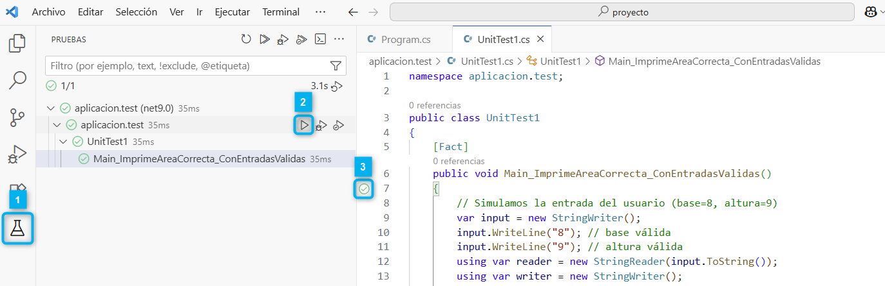
Supongamos que hacemos estos cambios en el código de Program.cs para que falle el test:
// En double areaTriangulo_cm = baseTriangulo_cm * alturaTriangulo_cm / 2;
// Dividimos el área del triángulo por 3 para que falle el test
double areaTriangulo_cm = baseTriangulo_cm * alturaTriangulo_cm / 3;
// En string salida = $"El área del triángulo es: {areaTriangulo_cm} cm²";
// Quitamos la tilde de "área" para que falle el test al ser la salida diferente
string salida = $"El area del triángulo es: {areaTriangulo_cm} cm²";
Si volvemos a pasar el test desde VSCode, veremos que el test falla obteniendo una salida como la siguiente:
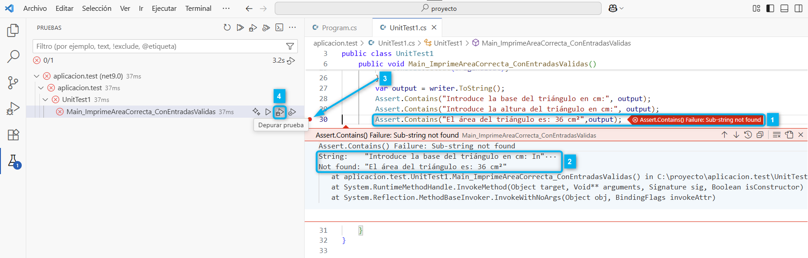
1️⃣ Nos indica donde está fallado el test. En concreto en:
Assert.Contains("El área del triángulo es: 36 cm²", output);
2️⃣ En este caso no se ha encontrado el texto "El área del triángulo es: 36 cm²" en la salida del programa "Introduce la base del triángulo en cm: In"···. Pero como la cadena es muy larga aparecen puntos suspensivos al final.
String: "Introduce la base del triángulo en cm: In"···
Not found: "El área del triángulo es: 36 cm²"
3️⃣ Si queremos verla completa, añadiremos un punto de interrupción (breakpoint) haciendo click izquierdo en el margen izquierdo del editor de código en la línea 30 y nos aparecerá un punto rojo.
4️⃣ Ahora pasamos el test pulsando el icono resaltado de Depurar prueba (debug) en lugar del de Ejecutar prueba (play). Esto hará que se ejecute el test y se detenga en el punto de interrupción.
Tras ejecutar de nuevo el test en modo depuración obtendremos el siguiente resultado:
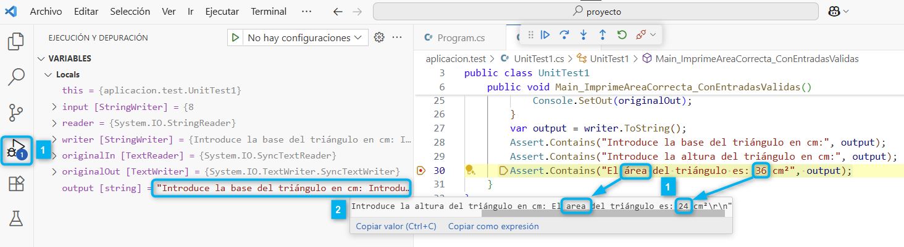
Depuración (debug) Nos aparecerá resaltada la línea donde estamos y en la parae izquierda veremos el VARIABLES donde podremos ver el valor de las variables en ese momento.output contiene la salida del programa que se ha ejecutado hasta ese momento. Pero como sigue siendo larga puede que no veamos el texto completo. Una opción es situarnos sobre dicho texto y nos aparecerá un tooltip con el texto completo. Haremos scroll hasta encontrar donde está el texto que no coincide con el esperado en el test: "El área del triángulo es: 36 cm²"